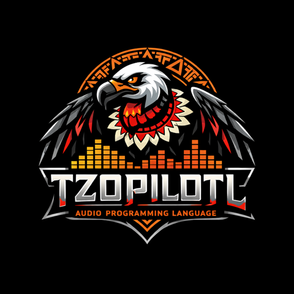

Tzopilotl
A statically typed live-coding language for real-time audio.
The language of TZPL, an open-source audio coding platform for composing, experimenting with, and performing music — a signal-graph compiler that turns synth definitions into native plugins, and a real-time engine that hot-loads them while the music plays.
import synthdef.*;
import synthc.compile.*; -- defSynthX
import common_ugens.*;
-- An LFO-driven sine through a comb filter. `nnhz` converts a MIDI-style
-- note number to Hz; `|>` pipes the left value in as the last argument.
fn bubbles() S =
0.4 lfsaw * 24
+ [8, 7.23] lfsaw * 3
+ 81
|> nnhz sinosc * 0.04
|> combn(0.2, 4) outlet;
bubbles defSynthX("bubbles") await;Evaluate this in the app and defSynthX walks the
signal graph, generates SIMD C++, compiles and links a native plugin in the
background, and registers it with the running engine — music that is already
playing never pauses.
One platform, three engines
The language
Statically typed and type-inferred, immutable by default, with auto-mapping over arrays, pattern matching, coroutines, and a left-to-right pipeline style built for live coding.
The VM is real-time safe: a direct-threaded interpreter with an O(1) TLSF allocator and an incremental GC with sub-millisecond pauses.
The synthdef compiler
Signal graphs written in Tzopilotl compile to optimized native plugins: ~200 unit generators, a 14-pass analysis pipeline, an algebraic rewrite engine, and SIMD C++ code generation.
Compilation is asynchronous — redefine a synth and players hot-swap to the new version when it loads.
The engine
A real-time engine with dynamic graph patching, crossfaded connection changes, lock-free RT/NRT communication, multi-core silo parallelism, and sample-accurate scheduling.
Polyphonic voicers, live controls, and notebook documents connect the language to sound in the desktop app.
Documentation
Build from source
TZPL currently runs on macOS (cross-platform support is planned):
git clone https://github.com/lfnoise/tzpl.git
cd tzpl
./build.sh # Release build, all cores
./build/lang/tzpl # start the Tzopilotl REPLRequires Clang (or GCC 15+), CMake 3.21+, and a C++23 toolchain. See Getting Started for the desktop app, packaged releases, and first sounds.